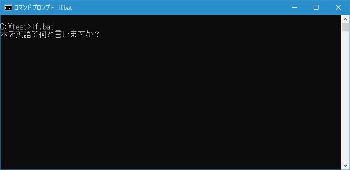
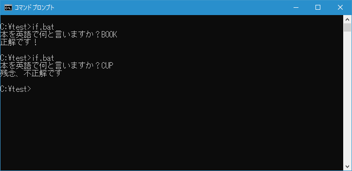
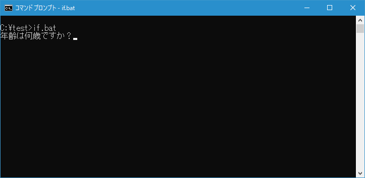
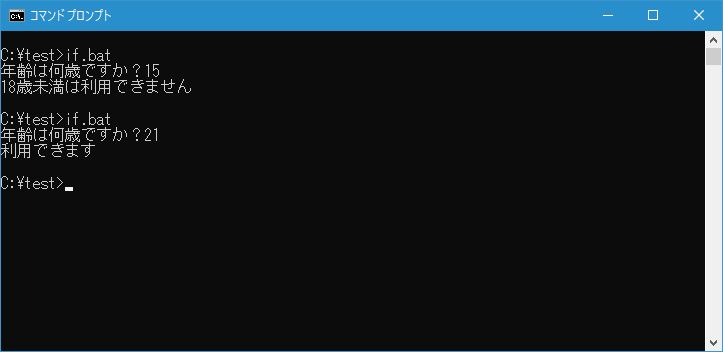
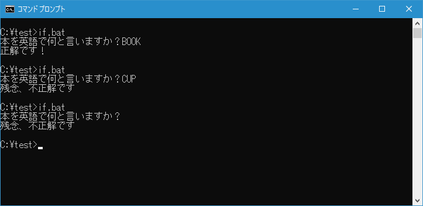
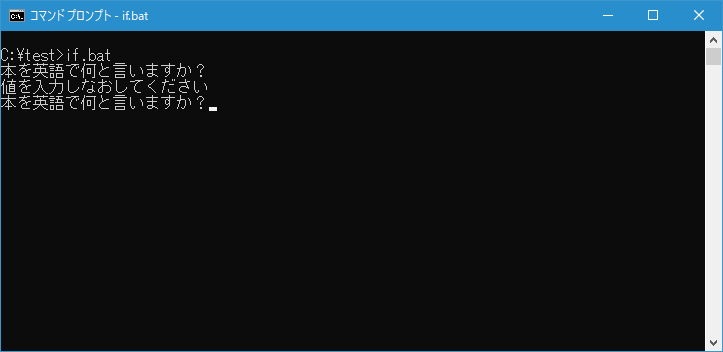
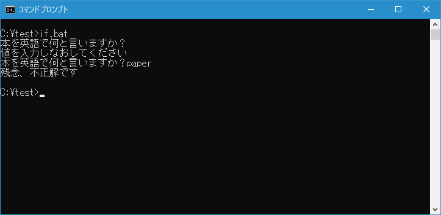
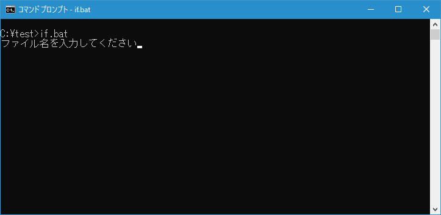
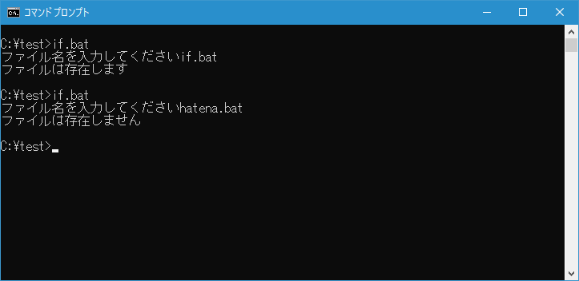
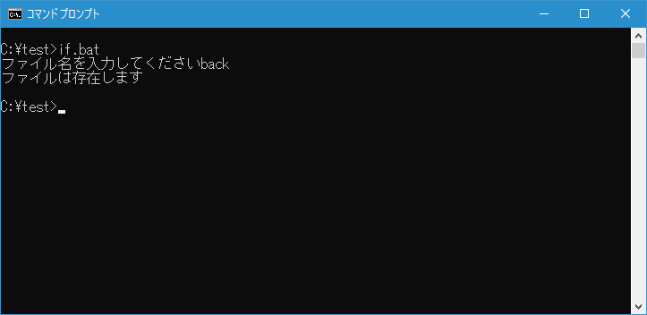

バッチファイルで条件分岐を使う(IF)
広告
バッチファイルでは IF コマンドを使用して記述した条件が一致する場合にコマンドを実行させることができます。条件には文字列と文字列を比較したり、指定したファイルが存在するかなどを記述することができます。ここでは IF コマンドを使いバッチファイルの中で条件分岐を行う方法について解説します。
IF コマンドにはいくつか書式がありますが、基本となる記述方法は次の通りです。
条件式には文字列と文字列を比較したりファイルが存在するかどうかなどを記述します。この条件を満たす場合だけ条件式の後に記述されたコマンドが実行されます。
条件式を満たす場合の他に満たさなかった場合には別のコマンドを実行させることもできます。次のように記述します。
条件式が満たされる場合にはコマンドA、満たされなかった場合にはコマンドBが実行されます。
また IF コマンドは括弧()を使って複数行に分けて記述することもできます。条件式が満たされた場合に複数のコマンドを実行したい場合などにはこちらの方が記述しやすいかもしれません。注意して頂きたいのは「(」の前と「)」の後には必ず半角スペースを記述する必要があります。
IF 条件式 (
コマンドA1
コマンドA2
) ELSE (
コマンドB1
コマンドB2
)
それでは条件式の記述の仕方をみていきます。
条件式で文字列Aと文字列Bが等しいかどうかを判断するには次のように記述します。文字列Aと文字列Bが等しい場合にコマンドが実行されます。
条件式の前に NOT を記述すると文字列Aと文字列Bが等しくない場合にコマンドが実行されます。
変数に格納されている値と比較する場合は次のように記述します。比較する文字列の部分も変数でも構いません。
テストを行うために次のような簡単なバッチファイル if.bat を c:\test に作成しました。
@echo off
set answer=
set /p answer=本を英語で何と言いますか？
if %answer%==BOOK (
echo 正解です！
) else (
echo 残念、不正解です
)
バッチファイルを実行すると質問が表示されますので回答を入力してください。

正しい回答を入力すると「正解です！」と表示され、誤った回答をすると「残念、不正解です」と表示されます。

文字列と文字列を比較する場合、等しいかどうかだけではなく比較演算子を使って条件式が正しいかどうかの判断をすることができます。
/I オプションを付けると大文字と小文字の区別を行わずに比較します。
IF /I 文字列A 比較演算子 文字列B コマンド
使用できる比較演算子は次のようなものがあります。
| 演算子 | 意味 |
|---|
| EQU | 等しい |
| NEQ | 等しくない |
| LSS | より小さい |
| LEQ | 以下 |
| GTR | より大きい |
| GEQ | 以上 |
この書式は文字列どうしで比較する場合にも使えますが、文字列Aと文字列Bがそれぞれ数字だった場合には、文字列が数値に変換されて比較されるため、数値と数値を比較するためにも使用することができます。
テストを行うために次のような簡単なバッチファイル if.bat を c:\test に作成しました。
@echo off
set answer=
set /p answer=年齢は何歳ですか？
if %answer%==BOOK (
echo 正解です！
) else (
echo 残念、不正解です
)
バッチファイルを実行すると質問が表示されますので回答を入力してください。

入力した数値が18以上かそうでないかによってそれぞれ回答が表示されます。

条件式で変数に格納された値を比較する場合、変数が未定義だとエラーが発生します。先程のサンプルのようにユーザーが入力された値を変数に格納し、変数を文字列や数値と比較する場合などには注意が必要です。
文字列と文字列で比較する時に使用したバッチファイルを実行したあと、何も入力せずに[Enter]キーを押してみてください。エラーが表示されます。
このような場合は、条件式の左側と右側をそれぞれダブルクォーテーションで囲ってください。
@echo off
set answer=
set /p answer=本を英語で何と言いますか？
if "%answer%"=="BOOK" (
echo 正解です！
) else (
echo 残念、不正解です
)
バッチファイルを実行してみると、入力が省略された場合でもエラーとなりません。

-- --
また IF コマンドの次の書式を使って変数が定義されているかどうかを判定することもできます。
変数が定義されていれば条件式が真となりコマンドが実行されます。NOT を付けた場合は変数が定義されていない場合に条件式が真となりコマンドが実行されます。
この書式と GOTO コマンドを利用して、何も入力されなかった場合は入力をやり直すようにバッチファイルを書き換えてみます。
@echo off
:start
set answer=
set /p answer=本を英語で何と言いますか？
if not defined answer (
echo 値を入力しなおしてください
goto start
)
if "%answer%"=="BOOK" (
echo 正解です！
) else (
echo 残念、不正解です
)
バッチファイルを実行したあと、質問が表示されたときに何も入力せずに[Enter]キーを押すと、メッセージを表示したあと改めて入力をうながします。

何か入力をしてから[Enter]キーを押せば、回答が正しいかどうかの判定をします。

IF コマンドでは条件式としてファイルやディレクトリが存在するかどうかを記述できる書式が用意されています。
IF [NOT] EXIST ファイル名 コマンド
ファイル名に指定したファイルが存在する場合は条件式が真となりコマンドが実行されます。ファイル名だけを記述した場合はカレントディレクトリ内にあるかどうかを探します。カレントディレクトリ以外のファイルを探す場合は絶対パス付きで指定してください。
テストを行うために次のような簡単なバッチファイル if.bat を c:\test に作成しました。
@echo off
set answer=
set /p answer=ファイル名を入力してください
if exist %answer% (
echo ファイルは存在します
) else (
echo ファイルは存在しません
)
バッチファイルを実行するとファイル名の入力待ちとなります。

入力したファイル名がカレントディレクトリに存在するかどうかを調べて対応するメッセージを表示します。

カレントディレクトリ内にあるサブディレクトリ名を入力した場合も存在した場合は条件式が真となります。ただファイルなのかディレクトリなのかは判別できません。

-- --
IF コマンドを使ってバッチファイルの中で条件分岐を行う方法について解説しました。
( Written by Tatsuo Ikura )
関連記事 (一部広告含む)
Profile
著者 / TATSUO IKURA
初心者～中級者の方を対象としたプログラミング方法や開発環境の構築の解説を行うサイトの運営を行っています。